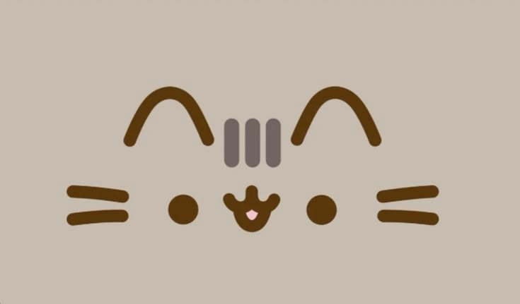
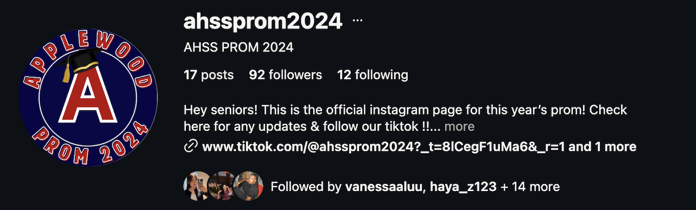
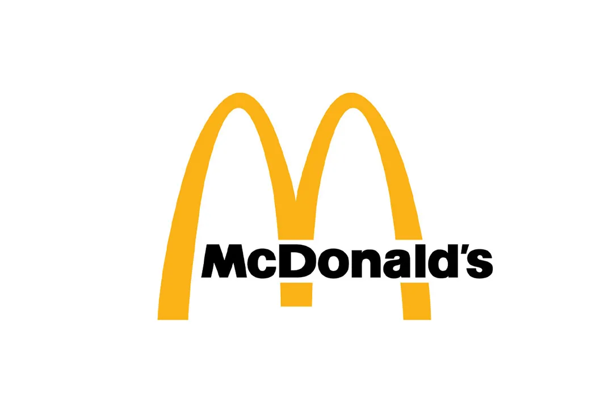

Google Developer Group
As Marketing Lead, I create social media graphics, promote events, and develop digital content for students.
Marketing · Graphic DesignHi, I'm Tricia! I enjoy graphic design and create visual content. I love experimenting with different styles, colours, and layouts to bring my ideas to life.

As Marketing Lead, I create social media graphics, promote events, and develop digital content for students.
Marketing · Graphic DesignA university music club that brings students together through music and creative activities.
Music · Student Involvement
Created promotional graphics, social media posts, and event announcements for high school prom activities.
Communications · Event MarketingWorked as a Summer Student supporting operations through order entry, data entry, and accurate record keeping.
Data Entry · Operations
Developed customer service, teamwork, time management, and communication skills in a fast-paced workplace.
Customer Service · TeamworkExamined psychological safety, employee belonging, and work-life balance in modern organizations.
CCT324 · Organizational StudiesResearched navigation challenges for international ESL students and proposed improvements to the website.
CCT380 · UX ResearchExplored copyright protection for Canadian creators and the challenges created by generative AI.
CCT206 · Policy ResearchAnalyzed how my writing has improved and changed over the course of my university studies.
ISP100· Writing for University and Beyond